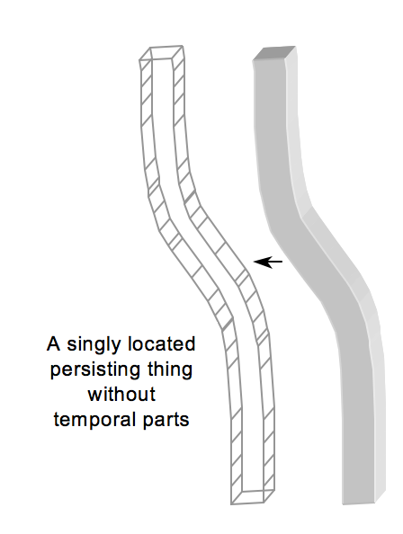
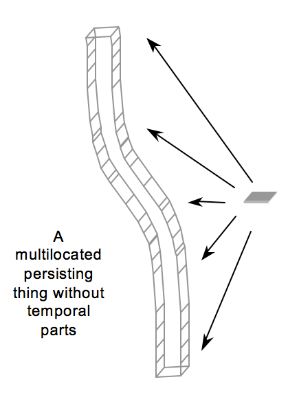

3 Temporal Location
The debate over persistence has suffered from a certain amount of imprecision. We initially explained that to persist is to be found, to be present, and even to exist at more than one time. And we explained that to be present at a time is not the same as being entirely present at the time. Philosophers often use locational vocabulary such as ‘occupies a region’ or ‘exactly occupies a region’ in subtly different ways, which may exacerbate the problem.
Talk of temporal location may in fact interact with mereological talk of part and whole, e.g., as in the characterization of what is for something to be wholly present somewhere.
In response to the problem of imprecission, (Parsons 2007) outlined a formal framework for location, one in which one could characterize a family of locational relations in terms of each other and further mereological vocabulary.
3.1 Mereology
Mereology is the formal theory of the part to whole relation.
There is a primitive binary relation of part to whole, which we symbolize \(\leq\). We may now define other predicates in terms of part:
- \(x\) overlaps \(y\), symbolized \(x \circ y\), iff \(x\) and \(y\) have a common part \(z\), that is, \(z \leq x\) and \(z \leq y\).
- \(x\) is a fusion of a set of objects \(S\) iff each and every member \(y\) of \(S\) is part of \(x\), and each and every part of \(x\) overlaps some member of \(S\).
Most axiomatizations of mereology agree on a common core of three axioms to the effect that the relation of part to whole is a partial order of the domain. Reflexivity makes sure that every object is part of itself; anti-symmetry bars different objects from being mutual parts; and transitivity states that if an object is part of another, and the second part of a third, then the first is part of the third.
3.1.1 Core Mereology
\[ \begin{align} x \leq x & & \text{Reflexivity}\\ x \leq y \wedge y \leq x \to x = y & & \text{Anti-Symmetry}\\ x \leq y \wedge y \leq z \to x \leq z & & \text{Transitivity} \end{align} \]
One may question whether the axioms apply to material objects, e.g., one may take the statue and the clay of which it is made to be part of one another without being identical. On the other hand, core mereology seems beyond doubt when it comes to spatial, temporal, and, more generally, spatiotemporal regions.
One more axiom concerns the question of how a whole may decompose into further proper parts. If one object is not part of another, then the latter has some part with no parts in common with the former. If a statue, for example, is not part of its torso, then it includes some part, e.g., its head, with no parts in common with its torso. One important consequence of the axiom is the extensionality of overlap and proper part, respectively: two objects are identical if they overlap exactly the same objects, and two objects are identical if they share all of their proper parts.
3.1.2 Extensional Mereology
Extensional mereology is the axiomatization that results when we enrich Core Mereology with an axiom of Strong Supplementation:
\[ \begin{align} x \nleq y \to \exists z (z \leq x \wedge \neg z \circ y) & & \text{Strong Supplementation} \end{align} \]
The axiom has been called into question when it comes to material objects. Some philosophers deny that the statue is part of the clay of which it is made, yet they deny that the clay has parts that are disjoint of the statue since they are after all made out of the same matter.
On the other hand, the axiom seems reasonable for spatial, temporal, and even spatiotemporal regions. Consider the spatial case. If \(r\) is a spatial region and \(s\) is not a subregion of \(r\), then \(s\) must include a subregion that does not overlap \(r\). If you conceive of regions as sets of points, then a region is part of another iff the latter contains each and every point in the former. But if \(s\) is not part of \(r\), then \(s\) must include points that are not in \(r\), and a set of such points should itself count as a part of \(s\), which fails to overlap \(r\).
Even more problematic is the axiom of Fusion according to which every set has a mereological fusion by which we mean a fusion which includes as parts all members of the set and only objects which overlap some member of the set.
3.1.3 Classical Extensional Mereology
Classical Extensional Mereology is the axiomatization that results from Extensional Mereology when we add the axiom of fusion:
\[ \begin{align} S \neq \emptyset \to \exists x (\forall y (y \in S \to y \leq x) \wedge \forall y(y \leq x \to \exists z (y \circ z \wedge z \in S)) & & \text{Fusion}\\ \end{align} \]
Fusion has been controversial, for one may doubt that every set, no matter how heterogeneous, gives rise to a whole whose parts are exactly those that overlap the members of the set. But when combined with the axioms of Extensional Mereology, we find that not only do such fusions exist, but they are unique too.
While (Lewis 1986) takes the axioms of Classical Extensional Mereology to be akin to logic, others have rejected them for material objects. Fewer have questioned the truth of the axioms for spatial, temporal, and spatiotemporal regions, but for present purposes, we will make do with the assumption that locations, whether spatial or temporal, are governed by the axioms of Extensional Mereology.
3.2 Theories of Location
We now proceed to distinguish four basic relations, which will enable us to clarify what is meant by the claim that an occupant is found or present at a location and how to distinguish it from the claim that is is entirely or exactly found or present at that location.
3.2.1 Four Locative Relations
(Parsons 2007) makes a distinction between four relations, which we illustrate by means of the diagram found in (Gilmore, Calosi, and Costa 2024):

Weak location
I’m weakly located in the room simply because the room is not free of me. I will remain weakly located in the room if step through the threshold even if some of me remains in the room.
We will write:
- \(o\) is weakly located at \(r\), in symbols: \(o @_\circ r\).
In the diagram above:
\(d\) is weakly located at \(r_2\), \(r_3\), \(r_4\), and \(r_5\).
\(d\) is not weakly located at \(r_1\).
We have used a spatial example, but weak location is what we have in mind when we say that something is found or present at a time or a temporal interval.
Entire location
I’m entirely located in the room because I’m in the room and I am nowhere outside the room. I will no longer be entirely located in the room if I step through the threshold even if some of me remains in the room.
We will write:
- \(o\) is entirely located at \(r\), in symbols: \(o @_< r\)
In the diagram:
\(d\) is entirely located at \(r_1\) and \(r_4\).
\(d\) is not entirely located at \(r_1\) or \(r_2\).
In the case of time, entire location is what we mean when we say that something is entirely found or entirely present at a time or temporal interval.
Pervasive Location
I pervade a region if none of it is free of me. I do not pervade the room, but I pervade the region exactly occupied by my hand.
We will write:
- \(o\) pervades at \(r\), in symbols: \(o @_> r\)
In the diagram:
\(d\) pervades both \(r_4\) and \(r_5\).
\(d\) does not pervade \(r_1\), \(r_2\), or \(r_3\).
Perfect Location
I’m perfectly located at a region if I am entirely located in the region and I pervade the region. My perfect location in space is like the shadow I cast in space.
We will write:
- \(o\) is exactly located at \(r\), in symbols: \(o @_= r\).
In the diagram:
\(d\) is exactly located at \(r_3\).
\(d\) is exactly located at \(r_1\), \(r_2\), \(r_4\), or \(r_5\).
This is one place where we depart from (Parsons 2007), who uses the term ‘exact location’ to refer to what we have called perfect location.
3.2.2 Two Theories of Location
There is no reason to take all four relations as basic. We may instead take one relation as basic and define the other three in terms of it in combination with other fundamental principles.
Weak Location
One approach is to take weak location as basic and defines the other three in terms of it:
\(o\) is entirely located at \(r\) if, and only if, \(o\) is weakly located at \(r\) and \(o\) is only weakly located at regions \(r\) overlaps. \[ o @_< r := o @_\circ r \wedge \forall s (o @_\circ s \to r \circ s) \]
\(o\) pervades \(r\) if, and only if, \(o\) is weakly located at each and every region \(r\) overlaps. \[ o @_> r := \forall s (r \circ s \to o @_\circ s) \]
\(o\) is perfectly located at \(r\) if, and only if, \(o\) both pervades and is entirely located at \(r\). \[ o @_= r := o @_> r \wedge o @_< s \] Or, equivalently: \[ o @_= r := \forall s (o @_\circ s \leftrightarrow r \circ s) \]
There is a further axiom one must add by hand, namely, a principle to the effect that whatever is weakly located somewhere is in fact perfectly located somewhere (or somewhere else). This is what (Parsons 2007) calls Exactness:
\[ \exists r \ x @_\circ r \to \exists r \ x @_= r \tag{Exactness} \]
One immediate consequence of the definitions above is that perfect location is unique if it exists. This in turn is a principle (Parsons 2007) dubs Functionality:
\[ x @_= r_1 \wedge x @_= r_2 \to r_1 = r_2 \tag{Functionality} \]
Perfect Location
The other approach is to take perfect location as basic and define the other three relations in terms of it in combination with Functionality as a further axiom:
\(o\) is weakly located at \(r\) if, and only if, \(o\) is perfectly located at some region \(r\) overlaps: \[ o @_\circ r := \exists s (o @_= s \wedge r \circ s) \]
\(o\) is entirely located at \(r\) if, and only if, \(o\) is perfectly located at a location of which \(r\) is part. \[ o @_< r := \exists s (o @_= s \wedge s \leq r) \]
\(o\) pervades \(r\) if, and only if, \(o\) is exactly located at some part of \(r\). \[ o @_> r := \exists s (o @_= s \wedge r \leq s) \]
Exactness is a direct consequence of the definition of weak location in terms of perfect location, which means that there is no need to add it by hand as an axiom.
3.2.3 Endurance Revisited
We will now distinguish two models of endurance and ask whether we have the resources to make sense of them.
Mereological Endurance
On one model of endurance, to persist is to be wholly located at every time at which one exists. One may now wonder how whole location is supposed to compare with the four relations we considered above.
\(o\) is wholly located at \(r\) if, and only if, every part of \(o\) is weakly located at \(r\).
\[ o @_\blacktriangleleft r := \forall y (y \leq x \to y @_\circ r) \]
While this relation may seem similar to entire location, they are not to be confused for reasons we have discussed before. For recall the diagram below drawn from (Gilmore, Calosi, and Costa 2024):

Since \(o_1\) is a simple object, it has only itself as a part. Because \(o_1\) is weakly located at \(r_1\) and no part of \(o_1\) fails to be weakly located at \(r_1\), we conclude that \(o\) is wholly located at \(r_1\). On the other hand, \(o_1\) is not entirely located at \(r_1\) simply because \(o_1\) is weakly located somewhere outside \(r_1\), namely, \(r_3\). So, whole and entire location will come apart in the spatial case if there are spatially extended simples.
Here is how one may use the definitions above to regiment endurance:
- \(x\) endures if and only if \(\exists t \exists r (\neg t \circ r \wedge x @_\blacktriangleleft t \wedge x @_\blacktriangleleft r)\)
This definition allows for mixed cases in which a continuant endures by being wholly located only at some of the times at which it exists. To rule that out, we may say that an object endures throughout if it is wholly located at every time at which it exists.
- \(x\) endures throughout if and only if \(x\) persists and \(\forall t(x@_\circ t \to x @_\blacktriangleleft t)\).
The model of endurance that emerges is that of a temporally extended simple as illustrated by the picture drawn from (Gilmore, Calosi, and Costa 2024):

Notice, incidentally, that (Parsons 2007) has the means to offer an account of temporal parts in terms of the vocabulary of the framework:
- \(x\) is a temporal part of \(y\) at \(T\) if, and only if, \(x\) is a fusion of the set of objects \(z\) such that \(z \leq y\) and \(z @_\blacktriangleleft T\).
On this definition, if \(y\) exists at \(T\) but endures throughout, then \(y\) is the temporal part of \(y\) at \(T\). Alternatively, we could define:
- \(x\) is a proper temporal part of \(y\) at \(T\) if, and only if, \(x\) is a fusion of the set of objects \(z\) such that \(z \leq y\) and \(z @_< T\).
On this definition, if \(y\) exists at \(T\) but endures throughout, then unless \(T\) is the temporal path of \(y\), nothing is a proper temporal part of \(y\) at \(T\).
Locational Endurance
We still seem to lack the resources to make sense of an alternative model of endurance, one on which the occupant is multilocated by which proponents mean exactly located at many different moments. Here is how Cody Gilmore glosses the model in (Gilmore 2014):
At least some material objects persist through time; and every material object is temporally unextended and wholly present at each instant at which it exists at all. Moreover, it is not the case that every material object has a different instantaneous temporal part at each different instant at which it exists.
And this is how Parsons describes what he takes to be a misguided reaction to his own characterization of endurance in (Parsons 2007) , p. 218:
According to these people, an enduring object is not one that is wholly located at each of many disjoint times, but one that is exactly located at each of many disjoint times.
To make the model vivid, consider again the diagram from (Gilmore, Calosi, and Costa 2024):

The question now is how to make sense of the putative relation of exact location the occupant is supposed to bear to different times in the temporal path of the object. The occupant is perfectly located at the temporal path depicted by the diagram because it is, on the one hand, entirely, and, on the other, pervasively located in that temporal region.
How to Make Sense of Multilocation
One approach to the problem is to observe that there is no room for the distinction between the two models of endurance in the framework we have outlined. To return to the spatial case again, we want to draw a distinction between the case of an extended simple and a multilocated simple as illustrated by the diagram below drawn from (Gilmore, Calosi, and Costa 2024):
| Extended Simple | Multilocated Simple |
|---|---|
|
 |
While \(o_1\) is an extended simple, \(o_2\) is a multilocated simple: \(o_2\) is exactly located at \(r_3\) and \(r_4\). This is the spatial counterpart of the contrast between the mereological and the locational model of endurance. The problem is that we lack the machinery to make sense of that distinction, since the patterns of exemplification of the part whole relation and that of weak location appears to be the same in both cases:
| Extended Simple | Multilocated Simple |
|---|---|
| \(o_1 @_\circ r_1\), \(o_1 @_\circ r_2\) | \(o_2 @_\circ r_3\), \(o_2 @_\circ r_4\) |
\(x \leq o_1 \to x @_\circ r_1\) \(x \leq o_1 \to x @_\circ r_2\) Etc |
\(x \leq o_2 \to x @_\circ r_3\) \(x \leq o_2 \to x @_\circ r_4\) Etc |
Free of
Weak location is elucidated in terms of the free of relation: for me to be weakly located in the room is for the room not to be free of me. (Parsons 2007) conceives of the free of relation as a binary relation between a location and an occupant, but we may be able to do better if we take the free of relation as a perfectly general topic-neutral relation: \(\alpha\) is free of \(\beta\), which we will symbolize \(\alpha \ \sharp \ \beta\). We use Greek variables as placeholders for variables over occupants and locations. For example:
The room is not free of me. Nor am I free of the room.
Neither the statue nor the clay is free of each other.
My singleton is not free of me. Nor am I free of my singleton.
Two adjacent regions are not free of each other.
To be free of something is not just to …
be numerically distinct from it
The room and I are numerically distinct, yet we are not free of each other.
to have no parts in common with it
My singleton and I have no parts in common, yet we are not free of each other.
We take the free of relation as basic and governed by three main axioms:
\[ \begin{align} \neg \alpha \ \# \ \alpha & & \text{Irreflexivity}\\ \alpha \ \# \ \beta \to \beta \ \# \ \alpha & & \text{Symmetry}\\ \alpha \leq \beta \to \forall \gamma(\neg \gamma \ \# \ \alpha \to \neg \gamma \ \# \ \beta) & & \text{Monotonicity} \end{align} \]
More tentatively:
\[ \begin{align} \neg \gamma \ \# \ \alpha + \beta \to \neg \gamma \ \# \ \alpha \vee \neg \gamma \ \# \ \beta & & \text{Delegation} \end{align} \]
One important consequence:
- If \(\alpha \ \# \ \beta\), then \(\alpha\) and \(\beta\) have no parts in common.
We do not generally have the converse:
The room and I lack parts in common, yet we are not free of each other.
My singleton and I lack parts in common, yet we are not free of each other.
We do not even have the converse when we restrict attention to locations. In a region-based account of spatial regions:
- Two adjacent regions lack parts in common, yet they are not free of each other.
Weak Location
Weak location obtains between an occupant \(x\) and a location \(R\).
For \(x\) to be weakly located at \(R\), \(x @_\circ R\), is for \(x\) to not be free of \(R\). That is, \(x @_\circ R\) if, and only if, \(\neg R \ \# \ x\).
Monotonicity and Delegation deliver:
\[ \begin{align} x \leq y \to \forall R (x @_{\circ} R \to y @_{\circ} R) & & \text{Inheritance}\\ R \leq S \to \forall x (x @_{\circ} R \to y @_{\circ} S) & & \text{Locational Inheritance}\\ x @_\circ R_1 + R_2 \to x @_\circ R_1 \vee x @_\circ R_2 & & \text{Delegation} \end{align} \]
Weak Entire Location
We now define a relation of weak entire location:
\[ x@^{-}_< R := x @_\circ R \wedge \forall S (x @_\circ S \to \neg R \ \sharp \ S) \]
That opens the way for a distinction between the cases we discussed above:
| Extended Simple | Multilocated Simple |
|---|---|
|
|
One could perhaps suggest that \(o_1\) is weakly entirely located in both \(r_1\) and \(r_2\) partly because no region that overlaps \(r_2\) is free of \(r_1\) and vice versa. On the other hand, \(o_2\) is not weakly entirely located in either \(r_3\) or \(r_4\) partly because the regions in question are free of each other.
Containment
In cases of multilocation, we may take the occupant to partly explain the link between the relevant locations. We write that \(x\) is contained in \(R\) if, and only if, \(x\) is weakly located at \(S\) and only regions that are not free of \(R\) via \(x\).
\[ x@_\prec R := x @_\circ R \wedge \forall S (x @_\circ S \to \neg R \ \sharp_{x} \ S) \]
Part of the reason \(o_1\) is contained in \(R_1\) and \(R_2\) is that is that they are not free of each other via \(o_1\), whereas \(R_3\) and \(R_4\) are free of each other via \(o_2\).
Perfect Containment
We are now in a position to define a relation of perfect containment, which \(o_1\) bears to both \(R_1\) and \(R_2\) but \(o_2\) only bears to \(R_3 + R_4\). We will write that \(x\) is perfectly contained in \(R\) if, and only if \(x\) pervades \(R\) and \(R\) contains \(x\).
\[ x@_\approx R := x @_\prec R \wedge x @_> R \]
We now have the means to characterize locational endurance:
- \(x\) endures if and only if \(\exists t \exists r (\neg t \circ r \wedge x @_\approx t \wedge x @_\approx r)\)
This definition allows for mixed cases in which a continuant endures by being perfectly contained only at some of the times at which it exists. To rule that out, we may say that an object endures throughout if it is perfectly contained in every time at which it exists.
- \(x\) endures throughout if and only if \(x\) persists and \(\forall t(x@_\circ t \to x @_\approx t)\).